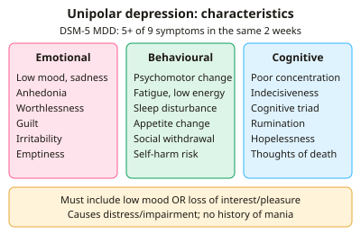

A-level Psychology Year 13 · Topic 17
Clinical psychology
Clinical psychology is about understanding, diagnosing and treating mental health disorders.
We will focus on depression and obsessive compulsive disorder, and on how disorders are classified and diagnosed using DSM-5 and ICD-11.
Then we compare biological and psychological explanations and treatments, and consider how clinical psychology helps society.
- 14 subtopics
- 458 questions
- Free: 17.1 notes and 10 questions
In this topic
- 17.1Clinical characteristics of unipolar depressionFree below · 30 questions
- 17.2Clinical characteristics of obsessive-compulsive disorder (OCD)Open in Full Marks · 36 questions
- 17.3Classification and diagnosis: DSM-5 and ICD-11; reliability, validity, comorbidity, culture and gender biasOpen in Full Marks · 44 questions
- 17.4Biological explanations of depression and OCD: genetic, neural and biochemicalOpen in Full Marks · 27 questions
- 17.5Psychological explanations of depression and OCD: cognitive, behavioural and psychodynamicOpen in Full Marks · 36 questions
- 17.6Biological treatments: drug therapies, ECT and deep brain stimulationOpen in Full Marks · 29 questions
- 17.7Psychological treatments: CBT, systematic desensitisation, exposure and response prevention, psychoanalytic therapyOpen in Full Marks · 36 questions
- 17.8Clinical psychology key question and application to societyOpen in Full Marks · 23 questions
- 17.9Schizophrenia: classification, symptoms, reliability and validity of diagnosisOpen in Full Marks · 36 questions
- 17.10Biological explanations for schizophrenia: genetics, dopamine and neural correlatesOpen in Full Marks · 21 questions
- 17.11Psychological explanations for schizophrenia: family dysfunction and cognitive explanationsOpen in Full Marks · 28 questions
- 17.12Drug therapy for schizophrenia: typical and atypical antipsychoticsOpen in Full Marks · 30 questions
- 17.13Psychological therapies for schizophrenia: CBT, family therapy and token economiesOpen in Full Marks · 21 questions
- 17.14The interactionist approach to schizophrenia and the diathesis-stress modelOpen in Full Marks · 61 questions
17.1 · Free notes
Clinical characteristics of unipolar depression

Key points
- Unipolar depression is a mood disorder with depressive episodes only and no history of mania or hypomania, which distinguishes it from bipolar disorder. DSM-5 includes major depressive disorder (MDD) and persistent depressive disorder (PDD). ICD-11 lists single-episode and recurrent depressive disorder, and dysthymia.
- DSM-5 MDD requires five or more of nine symptoms during the same two-week period. At least one must be depressed mood or loss of interest or pleasure (anhedonia), and the symptoms must represent a change from previous functioning.
- The symptoms must cause clinically significant distress or impairment in social, occupational or other areas of functioning. They must not be due to a substance or medical condition, and there must never have been a manic or hypomanic episode.
- Emotional characteristics: persistent low mood, sadness or emptiness, anhedonia, feelings of worthlessness and guilt, lowered self-esteem and irritability. In children and adolescents DSM-5 allows irritable mood to replace depressed mood.
- Behavioural characteristics: changes in activity and energy such as psychomotor retardation or agitation, fatigue, sleep disturbance (insomnia or hypersomnia), appetite or weight change, social withdrawal, reduced productivity and self-harm or suicidal behaviour.
- Cognitive characteristics: poor concentration, indecisiveness, rumination, hopelessness and recurrent thoughts of death. Beck's negative cognitive triad (negative views of the self, the world and the future) and attentional bias towards negative information are also key.
- Persistent depressive disorder (DSM-5) needs depressed mood most of the day, on more days than not, for at least two years (one year in children and adolescents). It also needs at least two other symptoms. It is chronic and often less severe than MDD.
- ICD-11 depressive episode requires at least five of ten symptoms for about two weeks, with at least one from the affective cluster (depressed mood or markedly diminished interest). Severity is rated mild, moderate or severe, with or without psychotic symptoms.
- Clinicians must separate depression from normal sadness or grief using duration, severity and impairment. DSM-5 removed the bereavement exclusion, so grief can be diagnosed as depression if criteria are met.
- Women are diagnosed with depression about twice as often as men. Typical onset is in early adulthood and episodes often recur; these facts link to gender bias and comorbidity in diagnosis.
- Exam tip: in case-study questions, match each symptom to emotional, behavioural or cognitive and check the core symptom and duration rules. Use precise terms such as anhedonia and psychomotor retardation.
In more detail
- Worked diagnosis: for two weeks Sam has low mood, has lost interest in football, sleeps 12 hours a night, feels worthless and can't concentrate. That is 5 symptoms, including low mood and loss of interest, so if it impairs his life he meets DSM-5 criteria for major depression.
- PHQ-9: a nine-item questionnaire that scores each DSM-5 symptom from 0 to 3; a total of 10 or more suggests at least moderate depression, and it is widely used by GPs.
- Seasonal pattern: DSM-5 allows a 'with seasonal pattern' specifier for depression that regularly begins in autumn or winter.
- Grief and depression: DSM-5 removed the bereavement exclusion, so depression can be diagnosed soon after a loss if the criteria are met, which was a controversial change.
Practice
Clinical characteristics of unipolar depression: 10 questions
Pick an answer to check it, or open the answer for the explanation.
1. What distinguishes unipolar depression from bipolar disorder?
- It never involves suicidal thoughts
- There is no history of manic or hypomanic episodes
- Symptoms last longer than two years
- It only affects adults
Show answer
B: There is no history of manic or hypomanic episodes. Unipolar depression involves depressive episodes only; bipolar disorder includes mania or hypomania. Duration, suicidal thoughts and age do not define the difference.
2. Under DSM-5, a major depressive episode requires how many symptoms, present for how long?
- Six or more for six months
- Five or more during the same two weeks
- Four or more for one month
- Three or more for one week
Show answer
B: Five or more during the same two weeks. DSM-5 requires five or more of nine symptoms in the same two-week period, including at least one of depressed mood or loss of interest or pleasure.
3. A patient has insomnia, fatigue, poor concentration, guilt and weight loss for a month, but no low mood or loss of interest. Under DSM-5 they:
- do not meet criteria, as a core symptom is required
- meet criteria for persistent depressive disorder
- meet criteria for major depressive disorder
- meet criteria only if they are female
Show answer
A: do not meet criteria, as a core symptom is required. Five symptoms are present, but DSM-5 requires at least one of depressed mood or anhedonia. Without a core symptom, MDD cannot be diagnosed.
4. Which is a cognitive characteristic of depression?
- Sleep disturbance
- Social withdrawal
- Psychomotor retardation
- Persistent rumination on past failures
Show answer
D: Persistent rumination on past failures. Rumination is a thinking process, so it is cognitive. Psychomotor retardation, sleep disturbance and withdrawal are behavioural characteristics.
5. Priya has stopped meeting friends, moves and speaks very slowly and sleeps 12 hours a day. These are mainly which type of characteristic?
- Behavioural
- Emotional
- Cognitive
- Genetic
Show answer
A: Behavioural. Social withdrawal, psychomotor retardation and hypersomnia are changes in observable activity, so they are behavioural characteristics.
6. Beck's negative cognitive triad in depression consists of negative views of:
- Mother, father and peers
- Self, world and future
- Mood, appetite and energy
- Past, present and sleep
Show answer
B: Self, world and future. Beck proposed that people with depression hold negative views of themselves, the world and the future, which maintain low mood.
7. A 15-year-old has been irritable with loss of interest for three weeks, plus other symptoms. Which DSM-5 point applies?
- Depression cannot be diagnosed under 18
- A two-year duration is required
- Irritable mood can replace depressed mood in children and adolescents
- Irritability is only a symptom of mania
Show answer
C: Irritable mood can replace depressed mood in children and adolescents. DSM-5 allows irritable mood instead of depressed mood in children and adolescents. The two-week rule applies to MDD, not two years.
8. An adult has had depressed mood most days for 18 months, plus poor appetite and low self-esteem. Under DSM-5 persistent depressive disorder, they:
- meet criteria, since one year is enough for adults
- meet criteria only if hospitalised
- do not yet meet the two-year duration for adults
- meet criteria for bipolar disorder
Show answer
C: do not yet meet the two-year duration for adults. PDD needs two years of symptoms in adults (one year in children and adolescents). Eighteen months is too short for an adult diagnosis.
9. Which statement about an ICD-11 depressive episode is correct?
- Hallucinations alongside low mood
- A prior manic episode followed by low mood
- Nine symptoms lasting at least one year
- Five of ten symptoms, including low mood or diminished interest
Show answer
D: Five of ten symptoms, including low mood or diminished interest. ICD-11 needs five of ten symptoms for about two weeks, with at least one from the affective cluster. Mania would indicate bipolar disorder.
10. In a sample of 1,200 people diagnosed with depression, the ratio of women to men is 2:1. How many are women?
- 400
- 600
- 800
- 900
Show answer
C: 800. A 2:1 ratio gives 3 parts in total. 1,200 ÷ 3 = 400 per part, so women = 2 × 400 = 800.
Keep going in Full Marks
Full Marks has 30 questions on Clinical characteristics of unipolar depression (20 more than here), set out in practice levels. You also get notes and 3D models for all 14 subtopics of Clinical psychology, plus games, timed exams and past papers.